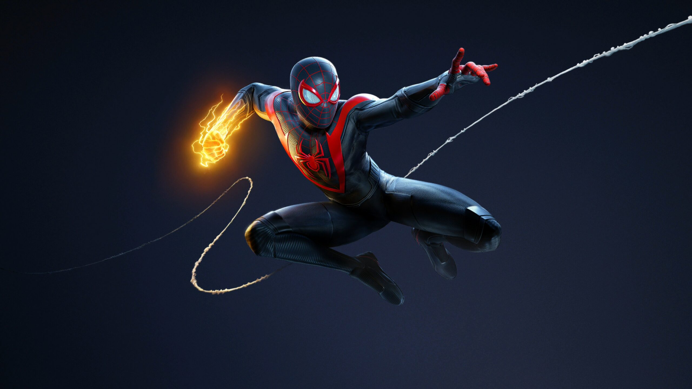

Spider-Man
Sony Interactive Entertainment, Insomniac Games and Marvel have teamed up for
an
authentic
story starring Spider-Man.
This is not the Spider-Man you know from the movies. The Peter Parker from this story is
a
veteran crime fighter who
keeps the streets of Marvel's New York safe. But the fate of millions of New Yorkers
isn't
his only headache. He also
tries to find the balance between his hectic personal life and his career.

Spider-Man: Miles Morales
In this latest adventure from the universe of Marvel's Spider-Man, teenager
Miles Morales
must not only get used to his
new home, but also follow in the footsteps of his mentor Peter Parker as a new
Spider-Man.
A destructive force that threatens his new home soon forces our new hero to realize that
with great power comes great
responsibility. To save Marvel's New York, Miles must quickly perfect his skills as
Spider-Man.

Spider-Man 2
Spider-men Peter Parker and Miles Morales embark on a thrilling new adventure
in Marvel's
critically acclaimed
Spider-Man franchise on PS5
Swing, jump, and fly through Marvel's New York with the new web wings. Switch between
Peter Parker and Miles Morales at
lightning speed and experience their different storylines and epic new powers, as you
take on the iconic villain Venom
who threatens their lives, the entire city and their loved ones.